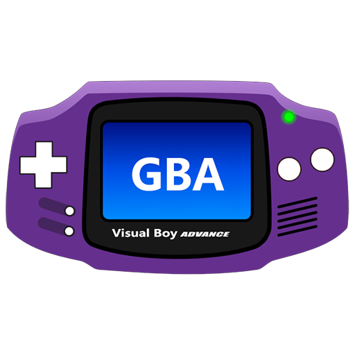

How to install
- Got to the VisualBoyAdvance Homepage. Download the latest version for your system
- Follow the installation process
- Open VisualBoyAdvance (create a desktop shortcut if you want to launch from your desktop)
VisualBoyAdvance can only run GBA games. In order to launch a game, you will need that game's rom file(ending in .gba). You must get these files on your own..
I do not condone nor advise pirating. Follow along below if you own one.
- Once you open VisualBoy Advance, you should see a black screen with tabs on the top right.
- To launch a game, click on File, then Open
- Create a subdirectory for your ROM files. Click on the ROM file of your choice.
- Your game should launch immediatly. If you want to launch it again, click on File
- Hover your curser over Recent
- Below Reset and Freeze, your recently launched ROM files should be listed.
- ROM files not previously launched will not appear here. Therefore you must follow the previous steps
To map controls on keyboard or controller
- Click on Options,
- Hover over Joypad, Configure, 1... (or 2,3, or 4 if setting up multiple controls)
- Map the controls to your liking